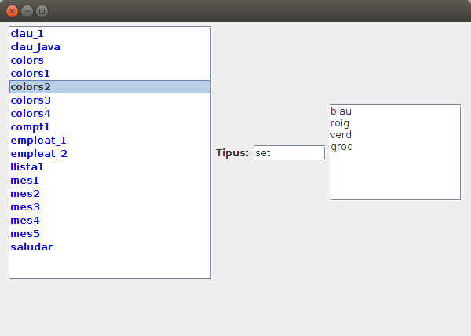

Exercicis
Exercicis
Exercici 1
En un nou paquet anomenat ExercicisRedis dins del projecte Tema7 , crea el fitxer Kotlin T7Ex1_ConsultarClaus.kt , que permeta consultar totes les claus guardades en el nostre servidor Redis.
Ha de presentar totes les claus actuals en Redis i el seu tipus, però amb un número davant. Posteriorment ha de demanar un número per teclat, i presentar la clau i el valor corresponent al número introduït, fins introduir el 0. Observa que depenent del tipus de la clau s'haurà de fer d'una manera o una altra. En la imatge teniu un exemple de cada:
1.- clau_1 (string)
2.- mes2 (string)
3.- empleat_1 (hash)
4.- mes1 (string)
5.- saludar (string)
6.- empleat_2 (hash)
7.- mes6 (string)
8.- mes5 (string)
9.- mes4 (string)
10.- mes3 (string)
11.- colors (set)
12.- mes7 (string)
13.- llista1 (list)
14.- clau_Java (string)
15.- lista111 (list)
16.- colors1 (set)
17.- colors2 (set)
18.- colors3 (set)
19.- text (string)
20.- colors4 (set)
21.- clau_4 (string)
22.- clau_2 (string)
23.- puntuacions (zset)
24.- compt3 (string)
25.- compt2 (string)
26.- compt1 (string)
27.- quatre (string)
28.- pi (string)
Introdueix un número (0 per a eixir)
4
mes1: gener
Introdueix un número (0 per a eixir)
6
empleat_2
sou --> 1500.0
nom --> Berta
Introdueix un número (0 per a eixir)
13
llista1
primera
sisena
cinquena
Introdueix un número (0 per a eixir)
11
colors
roig
verd
blau
Introdueix un número (0 per a eixir)
23
puntuacions
Nom5 --> 2.75
Nom2 --> 3.5
Nom3 --> 5.0
Introdueix un número (0 per a eixir)
0
Exercici 2
Realitzar en el mateix paquet un altre programa, aquesta vegada gràfic, que ens diga el mateix, però d'una forma més atractiva.
- El programa s'ha de dir T7Ex2_ConsultaClausGrafica.
- Contindrà un JList on han d'aparéixer totes les claus, millor si estan ordenades alfabèticament. Recordeu que el JList és un poc complicat, que es basa en un DefaultListModel , i és a aquest a qui heu d'afegir els elements.
- Al costat ha d'haver un JTextField que diga de quin tipus és quan se seleccione un element del JList
- I també un JTextArea amb el seu valor (siga del tipus que siga)
Aquest seria l'esquelet.
import javax.swing.JFrame
import javax.swing.JLabel
import javax.swing.JTextField
import javax.swing.JTextArea
import javax.swing.DefaultListModel
import javax.swing.JList
import javax.swing.JScrollPane
import java.awt.FlowLayout
import java.awt.Color
import redis.clients.jedis.Jedis
import java.awt.EventQueue
class EstadisticaRD : JFrame() {
val etTipClau= JLabel("Tipus:")
val tipClau= JTextField(8)
val contClau = JTextArea(8,15)
val con = Jedis("localhost")
val listModel = DefaultListModel<String>()
val llClaus = JList(listModel)
init {
defaultCloseOperation = JFrame.EXIT_ON_CLOSE
setBounds(100, 100, 450, 450)
setLayout(FlowLayout())
llClaus.setForeground(Color.blue)
val scroll = JScrollPane(llClaus)
llClaus.setVisibleRowCount(20)
val scroll2 = JScrollPane(contClau)
add(scroll)
add(etTipClau)
add(tipClau)
add(scroll2)
setSize(600, 400)
setVisible(true)
inicialitzar()
llClaus.addListSelectionListener{valorCanviat()}
}
fun inicialitzar(){
}
fun valorCanviat() {
}
}
fun main(args: Array<String>) {
EventQueue.invokeLater {
EstadisticaRD().isVisible = true
}
}
I aquest el seu aspecte

Llicenciat sota la Llicència Creative Commons Reconeixement NoComercial SenseObraDerivada 4.0